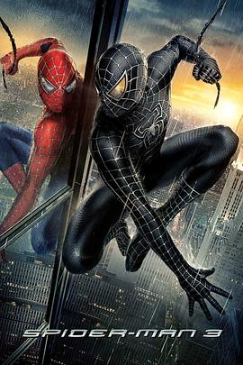

7.7
蜘蛛侠3
Spider-Man 3
2007
美国
评分 7.7
导演:
山姆·雷米
演员:
托比·马奎尔 / 克斯汀·邓斯特 / 詹姆斯·弗兰科 / 托马斯·哈登·丘奇 / 托弗·戈瑞斯 / 布莱丝·达拉斯·霍华德 / 罗斯玛丽·哈里斯
类型:
冒险,动作,科幻
剧情简介
蜘蛛侠在城市中屡屡立功，彼得·帕克的生活看似迎来了光明阶段：他获得民众的认可，与玛丽·简的关系稳定，未来仿佛触手可及。然而，荣耀带来的并非全然的幸福。帕克的内心一直背负着叔叔去世的阴影，而当新的线索浮现，他得知真正的凶手可能是“沙人”——一名因意外获得能力、能自由改变身体构成的逃亡者。这一真相动摇了帕克的信念，也让他在正义与复仇之间陷入激烈挣扎。与此同时，一个来自外太空的黑色共生体悄然附着在帕克身上。它增强了他的力量，也放大了他心底的愤怒与傲慢，使他在行动中变得更加鲁莽和冷漠。黑衣蜘蛛侠的出现让城市震惊，但他本人却逐渐沉迷于力量的快感，不愿面对性格正在被侵蚀的事实。帕克和好友哈利之间的误会愈加深刻，他的行为也让周围人与他产生隔阂。当复仇、嫉妒和力量的漩涡同时涌向他，帕克不得不直面自我，分辨自己真正想成为的英雄与人。他需要挣脱共生体的控制，也必须在众多破碎关系中寻找和解的可能。影片以更深层的心理冲突推动故事，将蜘蛛侠从外部敌人的战斗转向自我救赎的轨迹，展现他如何在力量与责任的矛盾中重新找到自己。